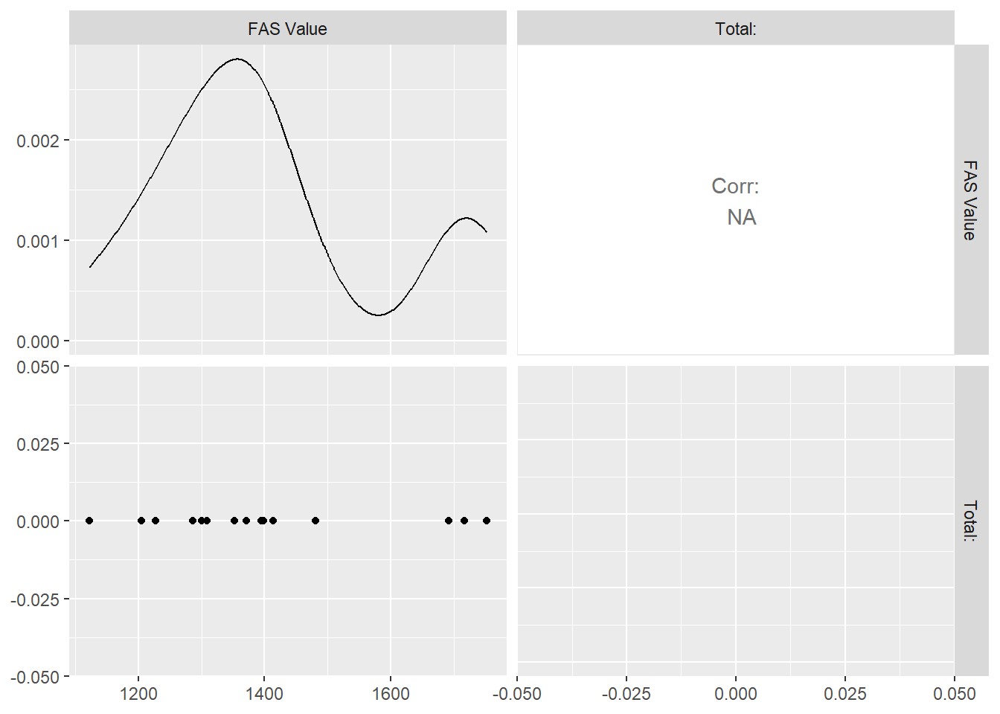
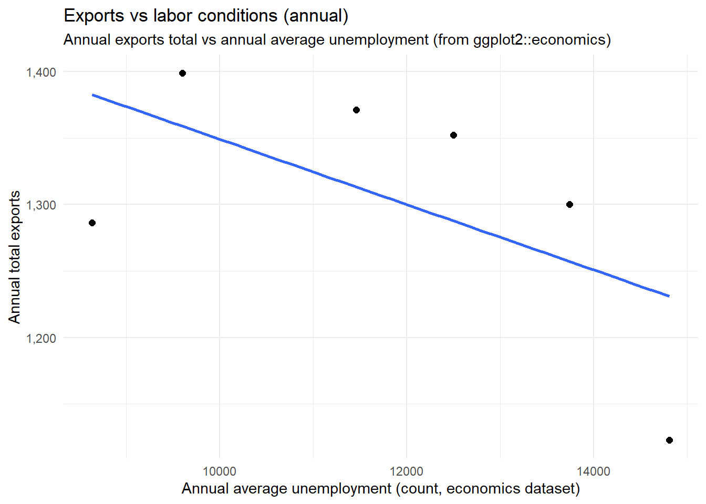

This notebook applies multivariate correlation to a U.S. exports dataset (DataWeb export totals). The goal is to understand how major export destinations move together over time, and to translate that structure into a practical next step that connects exports to an Economy & Labor indicator.
2 Objectives
Load and clean the exports dataset (robustly, even if Excel sheet layout varies).
Reshape the data into:
Long format (for time-series plotting)
Wide numeric format (for correlation analysis)
Create multivariate visuals:
Time-series trends for top export destinations
Correlation matrix + heatmap
corrplot (if installed)
Scatterplot matrix (GGally::ggpairs, if installed)
Economy & Labor tie-in (implemented):
Merge annual exports with an annual labor indicator
Run correlation + a simple regression to quantify the relationship
3 1) Setup
Code
library(tidyverse)library(readxl)library(stringr)library(scales)# Optional helpers (loaded only if installed)has_pkg <-function(pkg) {requireNamespace(pkg, quietly =TRUE)}use_pkg <-function(pkg) {if (has_pkg(pkg)) {suppressPackageStartupMessages(library(pkg, character.only =TRUE))TRUE } else {FALSE }}# -----------------------------# Helper: pick first path that exists# -----------------------------first_existing <-function(paths) { hit <- paths[file.exists(paths)]if (length(hit) ==0) NA_character_else hit[1]}# -----------------------------# Helper: identify columns that look like years (e.g., 2010, X2010)# -----------------------------get_year_cols <-function(nm) { nm <-as.character(nm) is_year <-str_detect(nm, "^(X)?(19|20)\\d{2}$") nm[is_year]}# -----------------------------# Helper: sanitize column names so dplyr/tibble never sees NA/blank names# (Fixes: "Can't transform a data frame with `NA` or `\"\"` names.")# -----------------------------sanitize_names <-function(x) { x <-as.character(x) x <-str_trim(x)# Replace NA / empty with stable placeholders bad <-is.na(x) | x ==""if (any(bad)) { x[bad] <-paste0("col_", which(bad)) }# Make syntactic + unique x <-make.names(x, unique =TRUE)# Light cleanup for readability x <-str_replace_all(x, "\\.+", "_") x <-str_replace_all(x, "^_|_$", "") x}# -----------------------------# Helper: safely compute correlation matrix (returns NULL if insufficient numeric data)# -----------------------------safe_cor <-function(df_numeric, method ="pearson") {if (is.null(df_numeric) ||ncol(df_numeric) <2) return(NULL) df_num <- df_numeric %>%mutate(across(everything(), as.numeric)) %>%select(where(~!all(is.na(.x))))if (ncol(df_num) <2) return(NULL)tryCatch( stats::cor(df_num, use ="pairwise.complete.obs", method = method),error =function(e) NULL )}
4 2) Load data (robust Excel handling)
This project uses an Excel export from DataWeb. Exported files can differ by: - sheet names - header row location - presence of “metadata” rows above the year-by-year table
The loader below scans each sheet and finds the row that looks most like a year header (2010–2024 style). It then reads the table starting at that header row.
# If no file exists, stop early but keep the notebook readable.if (is.na(file_used)) {stop("No exports Excel file was found in /data. Add the DataWeb export and re-render.")}sheets <- readxl::excel_sheets(file_used)# Detect which row in a sheet is most likely the header row by counting "year-like" valuesdetect_header_row <-function(path, sheet, max_preview_rows =40) { preview <- readxl::read_excel( path,sheet = sheet,col_names =FALSE,n_max = max_preview_rows )# Count how many year-like tokens appear in each row year_counts <-map_int(seq_len(nrow(preview)), function(r) { row_vals <-as.character(unlist(preview[r, ], use.names =FALSE)) row_vals <-str_trim(row_vals)sum(str_detect(row_vals, "^(X)?(19|20)\\d{2}$"), na.rm =TRUE) }) best_row <-which.max(year_counts)# If nothing looks like a header, return NAif (max(year_counts, na.rm =TRUE) ==0) return(NA_integer_) best_row}sheet_audit <-tibble(sheet = sheets,header_row =map_int(sheets, ~detect_header_row(file_used, .x)),selected = header_row ==max(header_row, na.rm =TRUE))sheet_audit
# A tibble: 2 × 3
sheet header_row selected
<chr> <int> <lgl>
1 Query Parameters NA NA
2 FAS Value 3 TRUE
Code
# Choose the sheet with the earliest (highest confidence) detected header row.# (If multiple, pick the first.)chosen_sheet <- sheet_audit %>%filter(!is.na(header_row)) %>%arrange(header_row) %>%slice(1) %>%pull(sheet)chosen_sheet
[1] "FAS Value"
Code
# Read the chosen sheet starting at the detected header row.hdr_row <- sheet_audit %>%filter(sheet == chosen_sheet) %>%pull(header_row)raw_block <- readxl::read_excel( file_used,sheet = chosen_sheet,skip = hdr_row -1,col_names =FALSE)# First row of this block contains the headers (possibly with blanks)header_vec <-as.character(unlist(raw_block[1, ], use.names =FALSE))names(raw_block) <-sanitize_names(header_vec)# Remove the header row from the dataraw_tbl <- raw_block[-1, ] %>%as_tibble()glimpse(raw_tbl)
# Heuristic: the "Entity" column is the first non-year column.year_cols <-get_year_cols(names(raw_tbl))non_year_cols <-setdiff(names(raw_tbl), year_cols)entity_col <- non_year_cols[1]entity_col
9.3 7C) Scatterplot matrix (optional; only if GGally installed)
Code
if (use_pkg("GGally")) {# ggpairs can be heavy. Keep it small and numeric. x_small <- x_matif (ncol(x_small) >=2) { GGally::ggpairs(x_small) }}

10 8) Interpretation (STAR: Scope + Action)
10.1 Scope
The dataset summarizes U.S. exports over time, grouped by destination/partner (depending on the DataWeb export configuration). Multivariate correlation helps identify which destinations tend to increase/decrease together over the same years.
10.2 Action
A time-series view identifies the most influential destinations (top N).
A wide numeric dataset is created to compute Pearson correlations.
The correlation matrix and heatmap reveal pairs (or clusters) of destinations with strong co-movement, which can support hypotheses about shared economic forces (global demand cycles, commodity effects, shipping constraints, etc.).
11 9) Economy & Labor tie-in (implemented)
A practical next step is to connect exports to a labor-market indicator.
This section uses the built-in ggplot2::economics dataset (monthly U.S. macro series) to compute an annual unemployment rate average, then merges it with annual exports.
This produces: - Correlation between total exports and unemployment - A simple regression model for interpretability
# 9B) Compute annual total exports (sum across all entities for each year)exports_total_annual <- exports_long %>%group_by(Year) %>%summarize(exports_total =sum(Exports, na.rm =TRUE),.groups ="drop" )exports_total_annual %>%slice_head(n =5)
# 9D) Visualization: exports vs unemployment (annual)ggplot(econ_labor_df, aes(x = unemployment_avg, y = exports_total)) +geom_point(size =2) +geom_smooth(method ="lm", se =FALSE) +scale_y_continuous(labels = scales::comma) +labs(title ="Exports vs labor conditions (annual)",subtitle ="Annual exports total vs annual average unemployment (from ggplot2::economics)",x ="Annual average unemployment (count, economics dataset)",y ="Annual total exports" ) +theme_minimal()

Code
# 9E) Correlation + regressioncor_val <-cor(econ_labor_df$exports_total, econ_labor_df$unemployment_avg, use ="complete.obs")cor_val
[1] -0.5898675
Code
lm_fit <-lm(exports_total ~ unemployment_avg, data = econ_labor_df)summary(lm_fit)
Call:
lm(formula = exports_total ~ unemployment_avg, data = econ_labor_df)
Residuals:
1 2 3 4 5 6
-108.42 42.84 64.47 57.77 39.88 -96.54
Coefficients:
Estimate Std. Error t value Pr(>|t|)
(Intercept) 1594.98558 201.70061 7.908 0.00138 **
unemployment_avg -0.02458 0.01683 -1.461 0.21782
---
Signif. codes: 0 '***' 0.001 '**' 0.01 '*' 0.05 '.' 0.1 ' ' 1
Residual standard error: 89.44 on 4 degrees of freedom
Multiple R-squared: 0.3479, Adjusted R-squared: 0.1849
F-statistic: 2.134 on 1 and 4 DF, p-value: 0.2178
11.1 Interpretation
If the correlation is negative, higher unemployment years tend to align with lower export totals (consistent with weaker demand).
If the correlation is positive, the time window may include structural shifts (e.g., exports rising while unemployment rises) and should be checked alongside other macro indicators (GDP, industrial production, inflation).
12 10) Forward momentum for the project
This week’s correlation structure provides a foundation for a predictive model.
Expand the labor linkage using additional annual indicators (labor-force participation, CPI, GDP, JOLTS).
Move from correlation to multilinear regression, using top destinations as predictors and a macro outcome as the response.
Validate assumptions (collinearity, residual diagnostics) and compare model variants (AIC / adjusted R²).